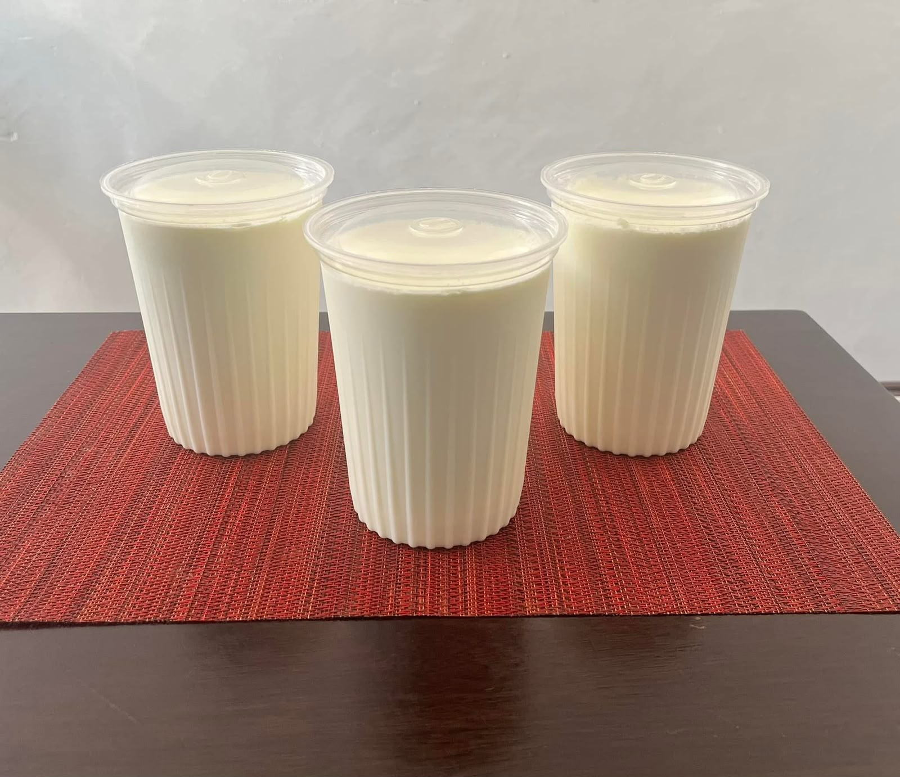
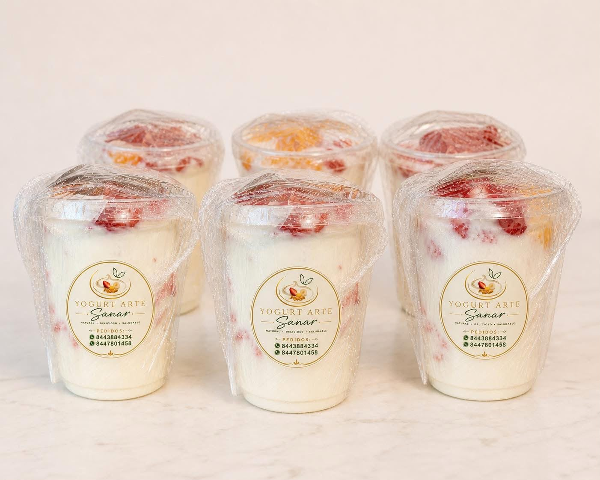
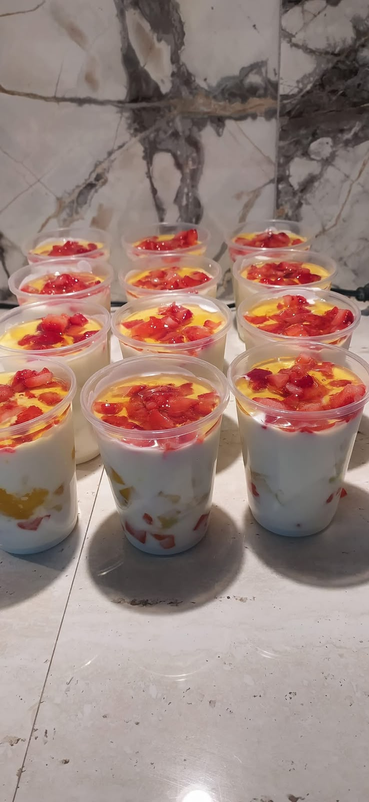

Yogurt artesanal, fresco y lleno de sabor.
Disfruta yogurt elaborado con ingredientes naturales y combinaciones para cada antojo.

Hecho con cuidado
para compartir
para compartir
Productos para disfrutar.
Dos opciones frescas para empezar.

Hecho con cuidado, de forma artesanal.
En Yogurt Arte Sanar nos dedicamos a la elaboración de yogurt artesanal de alta calidad, enfocado en la salud digestiva y el bienestar. Elaboramos cada lote con procesos tradicionales, sin conservadores ni colorantes artificiales, ofreciendo un producto fresco, vivo y lleno de sabor para toda la familia.
Así se disfruta.
Producto real, preparado para disfrutarse fresco.
Horarios
Lunes a viernes8:00 a. m. – 8:00 p. m.
SábadoCerrado
DomingoCerrado